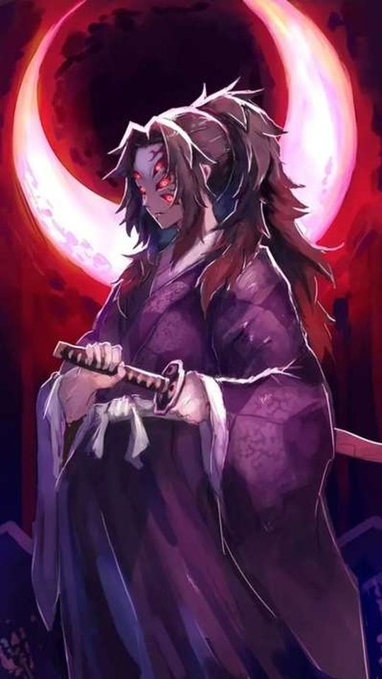

Demon Slayer Wallpapers: Every Hashira Ranked for Your Lock Screen

Demon Slayer is a show built on colour, and that makes it unusually good material for a phone wallpaper. This guide ranks all nine Hashira, plus Tanjiro and Nezuko, by how well their art works as a lock screen — not by who is the better character, but by how clearly they read behind a clock and a row of notifications. For each one you get the breathing style, the colour identity it brings, and the crop that keeps them looking sharp at small size.
What makes a Hashira wallpaper work on a lock screen
A lock screen is a strange canvas. It is large, but the top third is usually covered by a clock and the bottom third by a swipe bar, which leaves a narrow band in the middle for the actual picture. Good Hashira art accounts for this without meaning to. The strongest picks share three things: a single dominant colour, a clear silhouette, and a face that sits near the centre. Characters whose art is built around one glowing effect — Rengoku's flame, Giyu's water, Shinobu's butterflies — do well because the effect is a bright shape that survives being shrunk. Characters whose art is more detailed and muted, such as Gyomei's stone or Obanai's serpent, need a tighter crop and often a brighter background to compete with the clock.
The full ranking: eleven picks in order
This order ranks each character by lock-screen legibility and how easy their art is to crop. A lower rank is not a criticism of the character — it simply means the art asks more of you before it works on a phone.
- Kyojuro Rengoku. The Flame Hashira is the single best lock-screen pick. His orange, red and gold flame is a bright, simple shape that reads instantly, and his white-and-red haori frames the face. Crop so the flame sits behind his head and the clock lands on the dark part of the fire.
- Giyu Tomioka. Water blue is calm and cool, and Giyu's design is clean — dark hair, a half-and-half haori, and a sword that catches light. His palette sits quietly behind white text, which is exactly what a lock screen wants.
- Shinobu Kocho. The Insect Hashira brings purple, teal and a swarm of butterflies. The butterflies give the eye several small bright points, so her art stays interesting even when it is partly hidden.
- Tanjiro Kamado. His checkered green-and-black haori and the red-black-gold of Hinokami Kagura make him the most recognisable figure in the show. The check pattern reads clearly at small size.
- Muichiro Tokito. Mist white and mint green make for the softest, most restful lock screen in the cast. It is the pick if you want something calm rather than loud.
- Mitsuri Kanroji. Pink hair and a green-and-white uniform give a bright, friendly palette. Her art is often wide rather than tall, so crop for a centred bust.
- Sanemi Shinazugawa. Wind green and white, with the scars across his face and arms. High contrast, but his art is often mid-fight and busy, so choose the calmer frames.
- Nezuko Kamado. Pink eyes, black hair and the bamboo muzzle make a simple, striking silhouette. The bamboo is the detail that must stay in frame.
- Tengen Uzui. The Sound Hashira is deliberately flashy — red, gold and jewel tones — which is great for a home screen but can be too loud behind a clock.
- Obanai Iguro. Black, white and yellow, with the snake Kaburamaru. Distinctive, but the narrow face and dark palette need a bright background.
- Gyomei Himejima. Stone grey and brown, with prayer beads. The most muted of the Hashira and the hardest to make pop on a phone, but also the most atmospheric when done well.

Breathing styles and their colour identities
Every Hashira is tied to a breathing style, and in the anime those styles come with a fixed palette. Once you know the colour, you can match the wallpaper to the rest of your phone — icons, widgets, keyboard — and the whole screen starts to feel intentional.
| Character | Breathing style | Colour identity | Crop that suits it |
|---|---|---|---|
| Giyu Tomioka | Water | Deep blue, flowing light | Centred bust; let the water arc behind the head |
| Kyojuro Rengoku | Flame | Orange, red, gold | Vertical; flame behind and above the face |
| Shinobu Kocho | Insect | Purple, teal, butterflies | Wider crop to keep the butterflies in frame |
| Muichiro Tokito | Mist | White, mint green | Soft centre; leave the top pale for the clock |
| Mitsuri Kanroji | Love | Pink, green, white | Centred bust; keep the pink hair in the top third |
| Gyomei Himejima | Stone | Grey, brown, bead grey | Tight crop; brighten the background |
| Sanemi Shinazugawa | Wind | Green, white, scar pink | Upper body; keep the scars visible |
| Obanai Iguro | Serpent | Black, white, yellow | Include the snake around the shoulders |
| Tengen Uzui | Sound | Red, gold, jewel tones | Bold centre; best on a home screen |
Tanjiro and Nezuko: the two you will use most
Tanjiro and Nezuko sit outside the Hashira, but they are the two faces you will see most often on wallpapers, so they deserve their own note. Tanjiro's strength is pattern. His green-and-black checkered haori and the hanafuda earring are small, high-contrast details that stay readable even at icon size, so he tolerates a wider crop better than most. For a lock screen, aim to keep one earring and part of the check pattern visible, and let the clock fall on the darker green. Nezuko's strength is silhouette. Her black hair, pink eyes and the bamboo muzzle form a simple shape that is instantly recognisable, and the pink of her eyes gives the image its one bright accent. Crop so the muzzle sits below the clock rather than behind it, and keep her hair filling the top of the frame.
Matching the crop to the character
The last step is the crop, and it is where most wallpapers succeed or fail. A few habits help across the whole cast. First, decide what the single recognisable feature is — Rengoku's flame, Giyu's water, Nezuko's bamboo — and protect it above everything else. Second, keep faces in the middle band of the screen and let the top third hold background, because that is where the clock goes. Third, remember that most phone screens are close to a 9:16 ratio, so a square anime image will need to be extended or letterboxed; a portrait-oriented source is always easier. Finally, check the image at actual size before you commit. A wallpaper that looks great in a gallery thumbnail can fall apart once it is behind a clock, and a two-second test will save you from a screen you dislike.
Frequently asked questions
Who is the best Demon Slayer Hashira for a lock screen?
Kyojuro Rengoku is the strongest choice because his flame gives a bright, simple shape that survives being shrunk and partly covered. Giyu and Shinobu follow closely for their clean, cool palettes. If you prefer something quiet, Muichiro's mist white is the calmest option in the cast.
Should I rank by character or by art when choosing a wallpaper?
Rank by art. The character you like best may not have the easiest image to crop, and a wallpaper is a visual object first. A good compromise is to keep your favourite character on the home screen, where icons add interest, and a more legible pick on the lock screen.
Do breathing-style effects make a wallpaper look cluttered?
They can, but they usually help. Effects like water, flame and butterflies act as bright shapes that draw the eye and give the image structure at small size. The ones to watch are the busier mid-fight frames, where several effects overlap and the composition becomes hard to read.
What background colour works best behind a Hashira wallpaper?
Dark backgrounds work for the bright characters — Rengoku, Tanjiro, Mitsuri — because they make the colours pop. For the muted characters, Gyomei and Obanai especially, a lighter background such as grey or pale sky gives the figure something to stand against. Match the background to the character rather than to your phone.